User guide.
Each seat on the desk has its own workspace. Below is what every role sees and does, screen by screen, against the seeded demo. To follow along, sign in with the matching account from Try the demo.
Trader — run the auction
The trader launches requests, watches dealers respond, and constructs the award.
Start at the dashboard
The trader dashboard surfaces live auctions, draft RFQs, the live response rate, and a task list — all scoped to the firm.
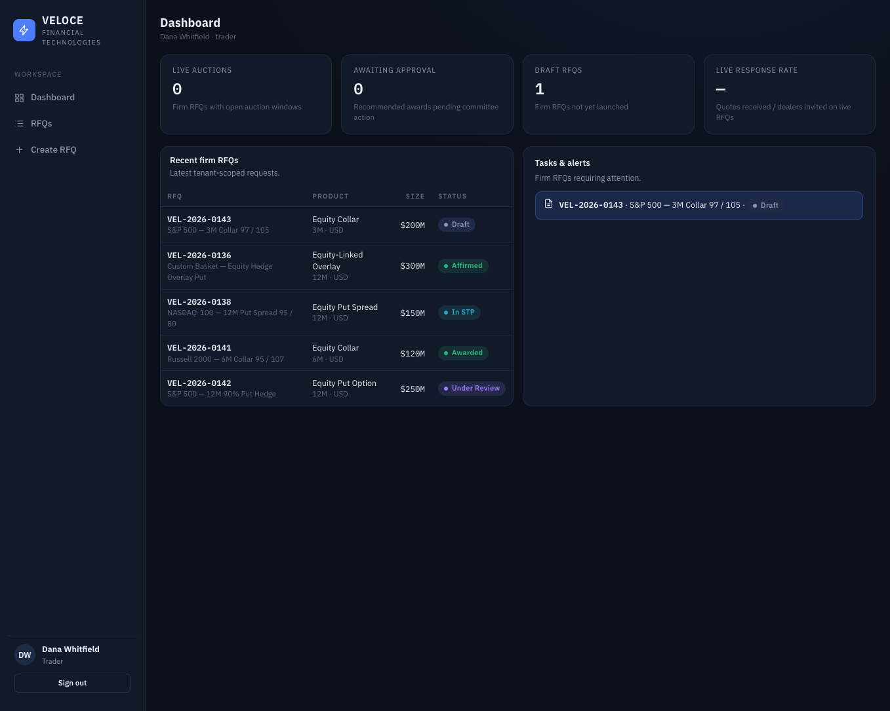
Scan the blotter
Every request the firm has run, across all statuses — draft, live, under review, awarded, in STP, affirmed — with size and product at a glance.
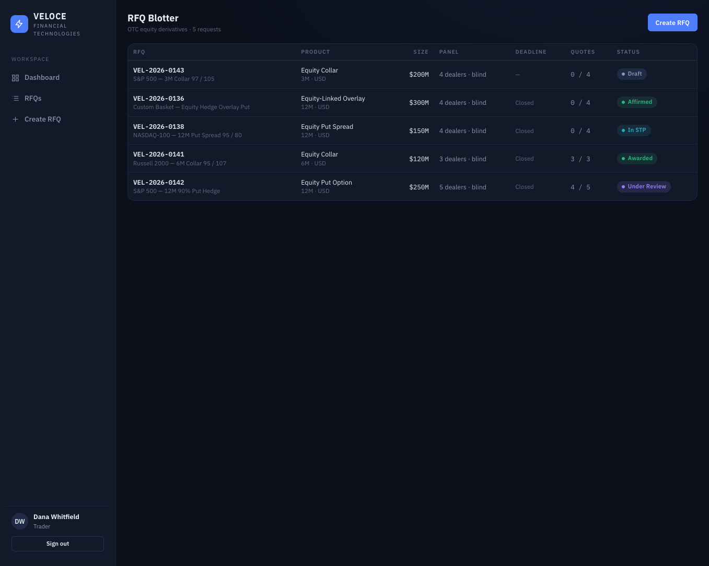
Build a request
A guided wizard captures the product and terms, economics and size, the dealer panel, and the auction window, then launches the RFQ to the invited dealers.
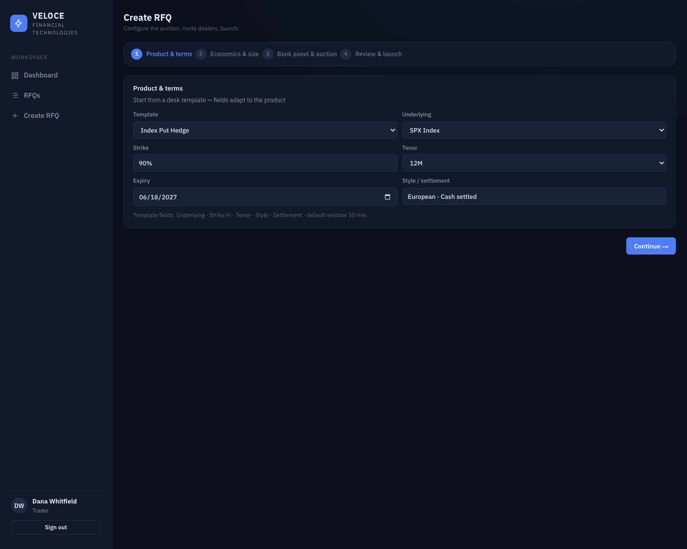
Work the quote board
Once the window closes, the board ranks responses and builds the award. Toggle between best single bank and best blended allocation; Veloce shows the basis-point and dollar difference and routes the chosen construction to approval.

Approver — gate the award
The approver reviews recommended awards against policy before they're finalized.
Dashboard
Pending approvals, policy flags, and concentration indicators front and centre.
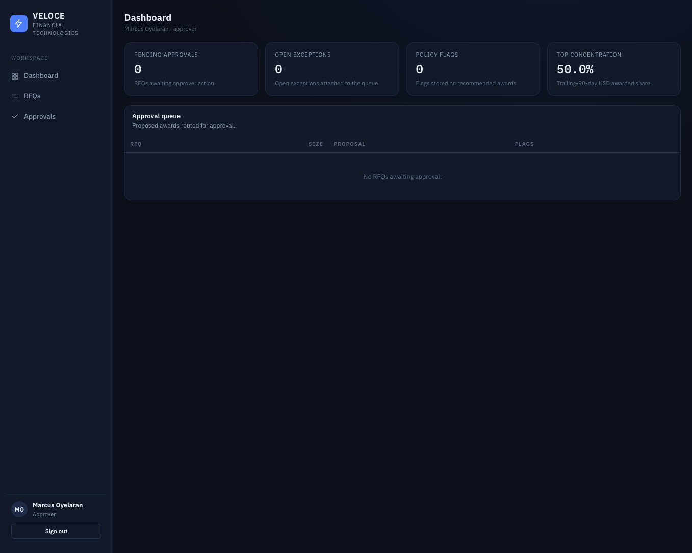
The approval queue
Every recommended award awaiting committee action, with the proposed allocation and any open exceptions.
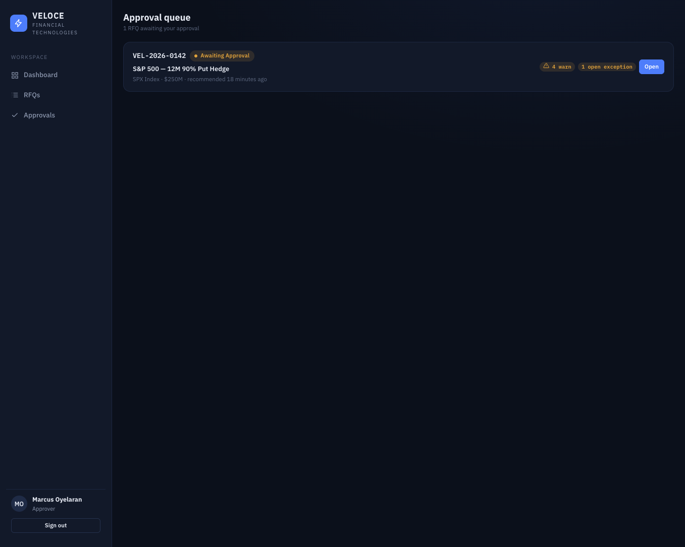
Review & decide
The detail view shows the archived quote ladder as best-execution evidence, concentration context, and policy flags. Above $250M, the platform displays a two-person-committee requirement and requires an acknowledgement note before a single approver can finalize — a deliberate, visible pilot gap. The approver can approve, reject with a reason, or request clarification.
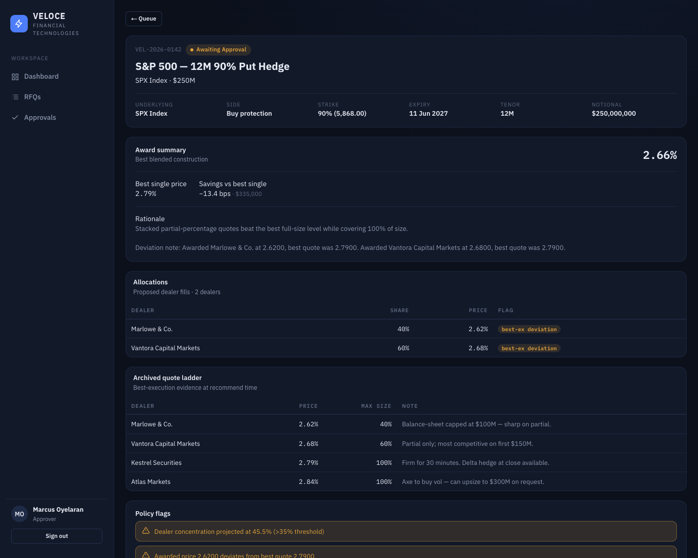
Operations — capture & affirm
Middle office turns approved awards into booked trades and walks them through STP.
Dashboard
Trade capture, STP handoff, and exception summaries for the firm's awarded flow.
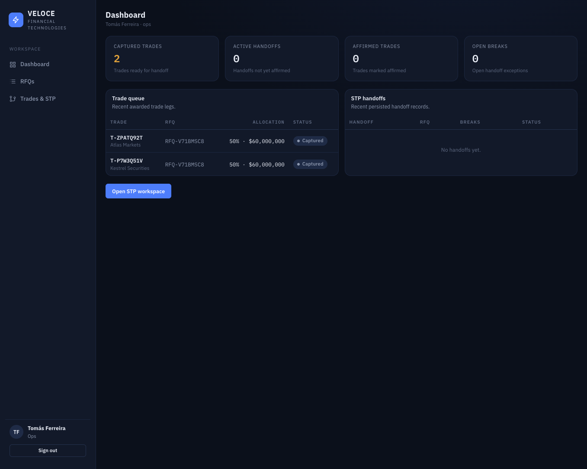
Approved trade economics
Every awarded allocation becomes a discrete trade with its own capture record — dealer, allocation, level, settlement, UTI, status. Awarded RFQs that haven't been handed off yet are queued for capture.
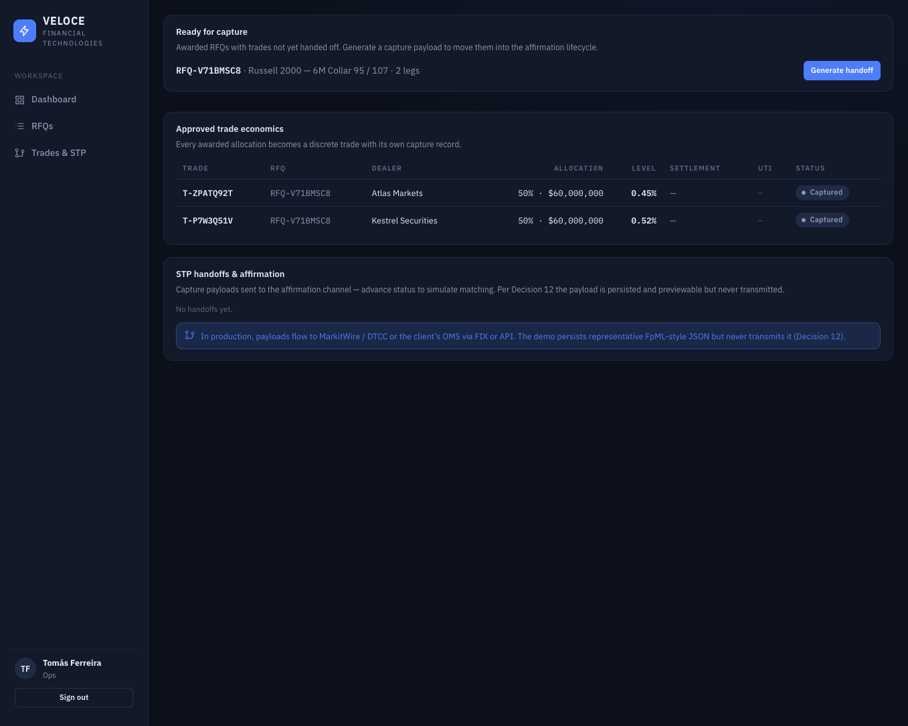
Generate & preview the STP payload
Generating a handoff produces the FpML-style capture payload and moves the trades into the affirmation lifecycle (sent → matched → affirmed). The payload is previewable as pretty-printed JSON and, per the pilot model, never transmitted.

Compliance — prove best execution
Compliance gets read-only evidence across every request the firm has run.
Dashboard
Best-execution status, exceptions, concentration, and recent event activity.
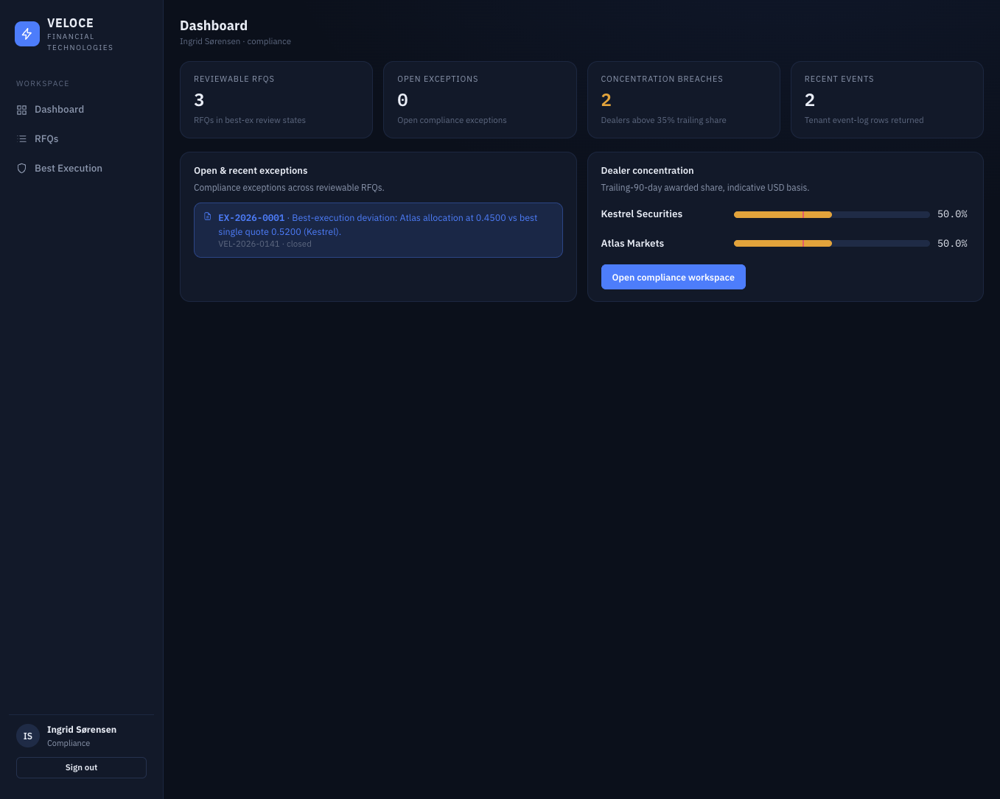
Best-execution evidence
Per RFQ: the latest stored quote ladder, the award decision, exceptions, and the event log — each exportable as a read-only JSON evidence pack that appends no audit events of its own.

Dealer concentration
Trailing-90-day awarded share per dealer, labelled as an indicative, single-currency (USD) basis — with non-USD trades intentionally excluded until FX conversion exists.
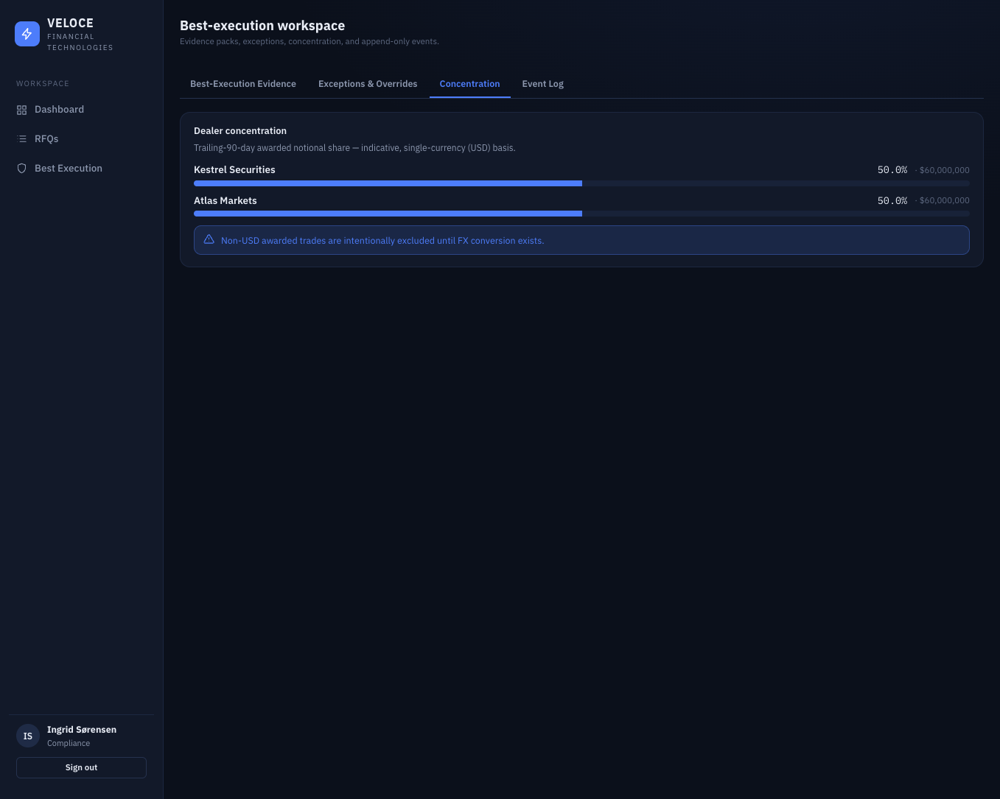
Administration — configure & audit
The admin workspace covers configuration, entitlements, policy reference, and audit.
Dashboard
User, panel, dealer, and audit summaries for the tenant.
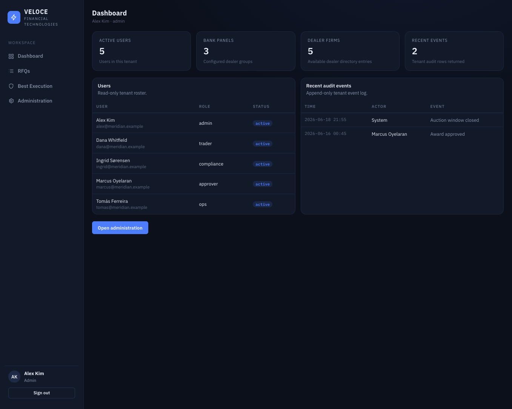
Manage bank panels
Bank panels are the one editable admin surface in the pilot: create panels, rename them, set the default, and add or remove dealer banks. Changes flow straight into the Create-RFQ panel picker and are written to the audit log. Other sections — templates, auction rules, approval thresholds, entitlements — are read-only, each marked with what it needs to become editable.
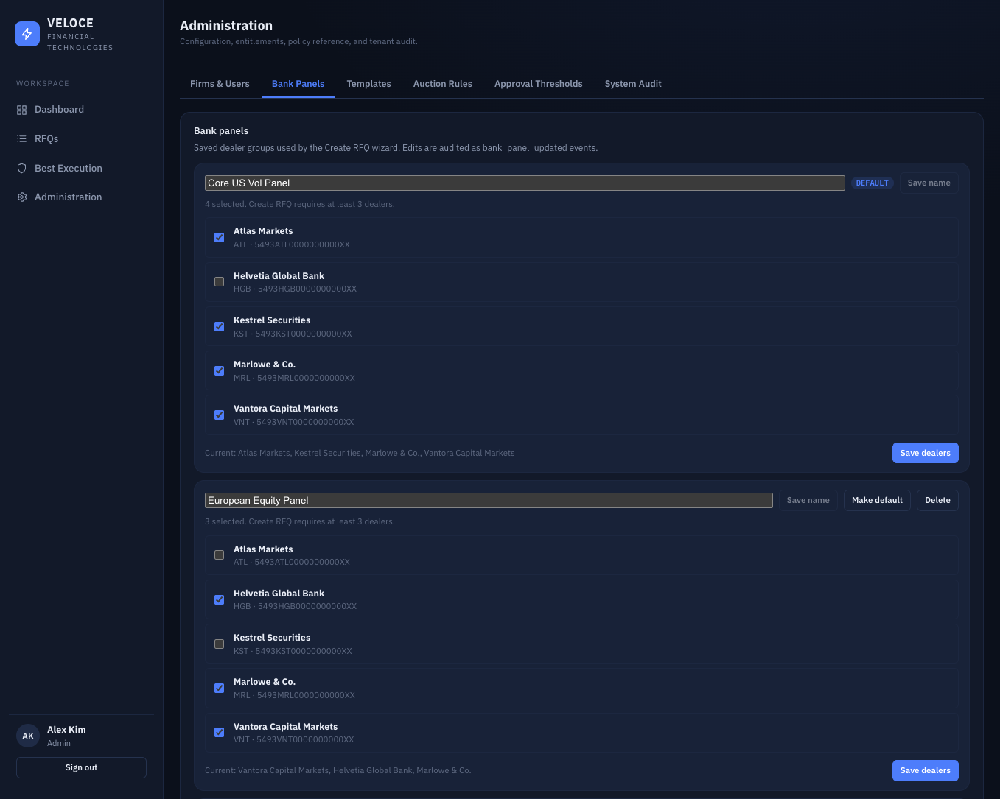
Dealer — respond to a request
Dealers don't have logins. When a trader launches an RFQ, each invited dealer receives a one-time magic link scoped to that single request. Opening it shows only that RFQ's terms and a quote form — no other firm's data, no other request. Quoting is blind: a dealer never sees competing responses. Submissions are accepted only until the auction deadline, which is enforced on the server; after that the dealer can still open the link to view what they submitted, but can no longer change it.